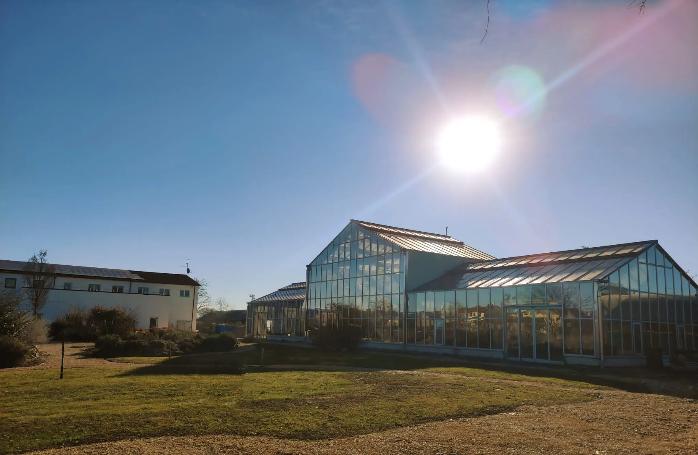

Chi siamo
storia Enjoy nature,
dal 1988

La natura è parte
della nostra storia
e della nostra anima
Nel 1988, dal profondo amore per il verde, è nata l'azienda florovivaistica Strambini Marco, dedicata alla realizzazione e alla cura di giardini e impianti di irrigazione. Da allora coltiviamo con passione piante e alberi, convinti che il benessere nasca anche dal contatto autentico con la natura.
Questa dedizione ci ha ispirato a creare Gardafarm: un luogo dove chiunque possa vivere il verde nella sua forma più genuina, scoprire le bellezze del territorio e riscoprire il piacere di stare bene grazie alla natura.
Enjoy nature,
stare bene
nella natura

Radici
contadine
Con radici profonde nella tradizione contadina, fin da piccoli abbiamo vissuto immersi nel verde, assaporandone la genuinità e i benefici. È proprio questo legame con la natura, con i suoi effetti positivi sul corpo e sulla mente, a ispirare la filosofia di Gardafarm.
Crediamo che il benessere fisico e mentale nasca anche da momenti autentici a contatto con la terra, gli alberi e gli animali. Per questo vogliamo condividere con chi ci visita la nostra visione: offrire relax, armonia e rigenerazione immersi nel verde, così come noi stessi li viviamo ogni giorno.

Visione
Imparare dalla natura,
crescere insieme.
A Gardafarm crediamo che il contatto con la natura sia una fonte inesauribile di benessere e ispirazione. Nel nostro agriturismo offriamo soggiorni rilassanti e rigeneranti, con spazi per vivere in modo autentico.
Nella nostra fattoria didattica e sociale proponiamo attività e spazi per eventi, momenti di festa, percorsi didattici, attività per scuole, famiglie, gruppi e aziende.
A Gardafarm la natura non è solo un luogo: è maestra, casa e occasione di incontro.